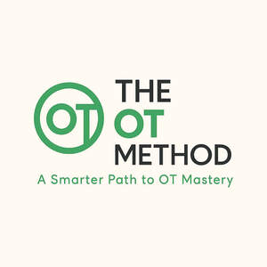

Trade Mark Journal No.2025/029 18 July 2025
UK00004230974 8 July 2025 (16,35,38,41)

- Class 16
- Workbooks containing exercises; Booklets; Printed seminar notes; Printed teaching activity guides; Instruction sheets; Printed lessons; Blank journal books; Instructional and teaching material; Printed booklets; Information booklets; Book covers; Printed teaching material; Notebook covers; Sticker activity books; Printed informational sheets; Printed teaching materials; Document files [stationery]; Study guides; Book marks; Printed guides.
- Class 35
- Online marketing; Providing academic course administration services relating to online course registration; Advertising the goods and services of online vendors via a searchable online guide; Online ordering services; Online advertising; Providing academic course administration services relating to on-line course registration; Online advertising services; Online business networking services; Providing a searchable online advertising guide featuring the goods and services of online vendors; Compilation of online business directories; Document preparation; Design of advertising logos.
- Class 38
- Transmission of videos, movies, pictures, images, text, photos, games, user-generated content, audio content, and information via the Internet; Streaming of video material on the internet; Streaming audio and video material on the Internet; Providing online chatrooms for the transmission of messages, comments and multimedia content among users; Providing access to multimedia content online.
- Class 41
- Providing online courses of instruction; Online education services; Providing online training seminars; Training courses; Provision of online tutorials.
The OT Collective LTD